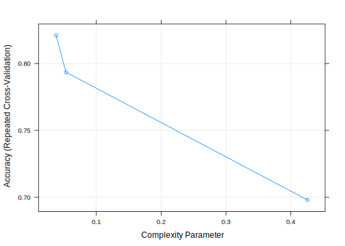
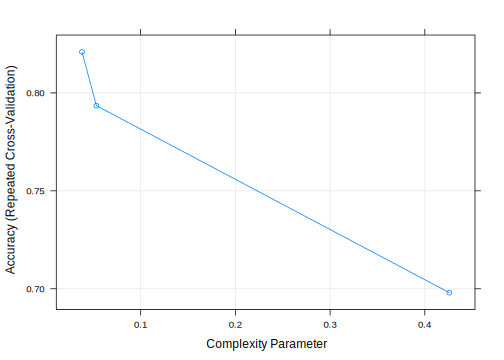

10.2 General Cross Validation Methods
There are two general CV methods that can be used to validate a prediction model:
- Single model CV.
- Multiple models comparison.
Single Model Cross Validation
The goal of a single model CV is to test the model’s ability to predict new data that was not seen and not used in model construction. So, the problem can be spotted like overfitting or selection bias, in addition, it can also give an insight on how the model will generalize to an independent dataset or an unknown dataset.
One round of CV involves partitioning a sample of data into complementary subsets, performing the analysis on one subset (called the training set), and validating the analysis on the other subset (called the validation set). To reduce variability, in most methods multiple rounds of CV are performed using different partitions, and the validation results are combined (e.g. averaged) over the rounds to give an estimate of the model’s predictive performance.
There are two major cross-validation methods: exhaustive CV and non-exhaustive CV.
Exhaustive CV learn and test on all possible ways to divide the original sample into a training and a validation set. Leave-p-out CV (LpO CV) is an exhaustive cross-validation method. It involves using \(p\) data samples as the validation dataset and the remaining data samples as the training dataset. This is repeated over and over until all possible ways to divide the original data sample into a training and a validation dataset \(p\).
Non-exhaustive cross-validation, in the contrary, does not compute all the possible ways of splitting the original data sample but still has a certain coverage. \(k\)-fold CV is typical non-exhaustive cross-validation.

Figure 10.2: K-Folds Cross Validation
In \(k\)-fold CV, the original data sample is randomly partitioned into \(k\) equal-sized sub-samples. Of the k sub-samples, a single subsample is retained as the validation dataset for testing the model, and the remaining \(k\) − 1 sub-samples are used as training data. The CV process is then repeated \(k\) times, with each of the \(k\) sub-samples used exactly once as the validation data. The \(k\) results can then be averaged to produce a single estimation. The advantage of this method over repeated random sub-sampling is that all observations are used for both training and validation, and each observation is used for validation exactly once. 10-fold CV is commonly used in practice.
General Procedure of CV
The general process of Cross-Validation is as follows:
Split the entire data randomly into \(K\) folds (value of \(K\) shouldn’t be too small or too high, ideally we choose 5 to 10 depending on the data size). The higher value of \(K\) leads to a less biased model (but large variance might lead to overfitting), whereas the lower value of \(K\) is similar to the train-test split approach we saw before.
Then fit the model using the \(K - 1\) folds and validate the model using the remaining \(K\)th fold. Note down the scores/errors.
Repeat this process until every \(K\) fold serves as the test set. Then take the average of your recorded scores. That will be the performance metric for the model.
We will use examples to demonstrate this procedure.
Cross Validation on Decision Tree Models
We have produced four decision tree models in Chapter 8. Let us do cross-validation on model2 and model3 since they have identical predictors with the random forest RF_model1 and RF_model2 which we will do cross-validation later.
library(caret)
library(rpart)
library(rpart.plot)
#read Re-engineered dataset
RE_data <- read.csv("./data/RE_data.csv", header = TRUE)
#Factorize response variable
RE_data$Survived <- factor(RE_data$Survived)
#Separate Train and test data.
train <- RE_data[1:891, ]
test <- RE_data[892:1309, ]
#setup model's train and valid dataset
set.seed(1000)
samp <- sample(nrow(train), 0.8 * nrow(train))
trainData <- train[samp, ]
validData <- train[-samp, ]# set random for reproduction
set.seed(3214)
# specify parameters for cross validation
control <- trainControl(method = "repeatedcv",
number = 10, # number of folds
repeats = 5, # repeat times
search = "grid")Our cross validation settings are: 10 folds, and repeat 5 times, with Grid search the optimal parameter. The detailed meaning of each settings refers to http://topepo.github.io/caret/data-splitting.html.
Let us do cross validation (CV) for Tree model2,
set.seed(1010)
# Create model from cross validation train data
# Tree_model2_cv <- train(Survived ~ Sex + Pclass + HasCabinNum + Deck + Fare_pp,
# data = trainData,
# method = "rpart",
# trControl = control)
# # Due to the computation cost once a model is trained.
# # it is better to save it and load later rather than compute a gain
# save(Tree_model2_cv, file = "./data/Tree_model2_cv.rda")
load("./data/Tree_model2_cv.rda")
print.train(Tree_model2_cv)## CART
##
## 712 samples
## 5 predictor
## 2 classes: '0', '1'
##
## No pre-processing
## Resampling: Cross-Validated (10 fold, repeated 5 times)
## Summary of sample sizes: 641, 640, 640, 641, 641, 642, ...
## Resampling results across tuning parameters:
##
## cp Accuracy Kappa
## 0.00887199 0.8253404 0.6003541
## 0.03041825 0.7955233 0.5418574
## 0.43726236 0.6908918 0.2281378
##
## Accuracy was used to select the optimal model using the largest value.
## The final value used for the model was cp = 0.00887199.model_accuracy <- format(Tree_model2_cv$results$Accuracy[1], digits = 4)
paste("Estimated accuracy:", model_accuracy)## [1] "Estimated accuracy: 0.8253"Display details of the cross validation model,
#Visualize cross validation tree
rpart.plot(Tree_model2_cv$finalModel, extra=4)
plot.train(Tree_model2_cv)

Figure 10.3: Decision Tree CV model2.
Let us record the model’s accuracy on trainData, validData, and test dataset. Remember trainData and validData are randomly partitioned from the train dataset.
### Access accuracy on different datasets
# prediction's Confusion Matrix on the trainData
predict_train <-predict(Tree_model2_cv, trainData)
conMat <- confusionMatrix(predict_train, trainData$Survived)
conMat$table## Reference
## Prediction 0 1
## 0 431 104
## 1 18 159# prediction's Accuracy on the trainData
predict_train_accuracy <- format(conMat$overall["Accuracy"], digits=4)
paste("trainData Accuracy:", predict_train_accuracy)## [1] "trainData Accuracy: 0.8287"# prediction's Confusion Matrix on the validData
predict_valid <-predict(Tree_model2_cv, validData)
conMat <- confusionMatrix(predict_valid, validData$Survived)
conMat$table## Reference
## Prediction 0 1
## 0 93 36
## 1 7 43# prediction's Accuracy on the validData
predict_valid_accuracy <- format(conMat$overall["Accuracy"], digits=4)
paste("viladData Accuracy:", predict_valid_accuracy)## [1] "viladData Accuracy: 0.7598"# predict on test
predict_test <-predict(Tree_model2_cv, test)
submit <- data.frame(PassengerId = test$PassengerId, Survived = as.factor(predict_test))
write.csv(submit, file = "./data/Tree_model2_CV.CSV", row.names = FALSE)
# test accuracy 0.75837
paste("Test Accuracy:", 0.7584)## [1] "Test Accuracy: 0.7584"# accumulate model's accuracy
name <- c("Esti Accu", "Train Accu", "Valid Accu", "Test Accu")
Tree_model2_CV_accuracy <- c(model_accuracy, predict_train_accuracy, predict_valid_accuracy, 0.7584)
names(Tree_model2_CV_accuracy) <- name
Tree_model2_CV_accuracy## Esti Accu Train Accu Valid Accu Test Accu
## "0.8253" "0.8287" "0.7598" "0.7584"We can see the tree differences from Figure @ref(fig:tree_model2_CV) and Figure ??. We can also see that despite the model tried the best parameters, the prediction accuracy on the test dataset is dropped from 0.76555 (default decision tree) to 0.75837. It shows that the model construction has reached the best since the change of the tree structure does not increase the accuracy.
The drop of the accuracy may caused by the reduction of the size of the training dataset. It reflects the second possible cause of the overfitting, that is the size of the training sample. Recall that decision tree model2 was trained on the train dataset and now it is trained on the trainData. the later is a random subset of the train dataset and only has 80 percent of the data samples. That is to say, the smaller of the training dataset the more chance of the inaccurate prediction accuracy on the test dataset (overfitting or underfitting).
Let us do cross validation on tree model3,
# CV on model3
set.seed(1234)
# Tree_model3_cv <- train(Survived ~ Sex + Fare_pp + Pclass + Title + Age_group + Group_size + Ticket_class + Embarked,
#
# data = trainData,
# method = "rpart",
# trControl = control)
#
# save(Tree_model3_cv, file = "./data/Tree_model3_cv.rda")
load("./data/Tree_model3_cv.rda")
# show model details
print.train(Tree_model3_cv)## CART
##
## 712 samples
## 8 predictor
## 2 classes: '0', '1'
##
## No pre-processing
## Resampling: Cross-Validated (10 fold, repeated 5 times)
## Summary of sample sizes: 641, 641, 641, 641, 641, 641, ...
## Resampling results across tuning parameters:
##
## cp Accuracy Kappa
## 0.03802281 0.8209755 0.6124019
## 0.05323194 0.7934831 0.5627884
## 0.42585551 0.6979987 0.2637528
##
## Accuracy was used to select the optimal model using the largest value.
## The final value used for the model was cp = 0.03802281.# record accuracy
model_accuracy <- format(Tree_model3_cv$results$Accuracy[1], digits = 4)
paste("Estimated accuracy:", model_accuracy)## [1] "Estimated accuracy: 0.821"Visualize model,
#Visualize cross validation tree
rpart.plot(Tree_model3_cv$finalModel, extra=4)
plot.train(Tree_model3_cv) 

Figure 10.4: Decision Tree CV model3.
Record model’s accuracy,
### Access accuracy on different datasets
# prediction's Confusion Matrix on the trainData
predict_train <-predict(Tree_model3_cv, trainData)
conMat <- confusionMatrix(predict_train, trainData$Survived)
conMat$table## Reference
## Prediction 0 1
## 0 387 61
## 1 62 202# prediction's Accuracy on the trainData
predict_train_accuracy <- format(conMat$overall["Accuracy"], digits=4)
paste("trainData Accuracy:", predict_train_accuracy)## [1] "trainData Accuracy: 0.8272"# prediction's Confusion Matrix on the validData
predict_valid <-predict(Tree_model3_cv, validData)
conMat <- confusionMatrix(predict_valid, validData$Survived)
conMat$table## Reference
## Prediction 0 1
## 0 90 24
## 1 10 55# prediction's Accuracy on the validData
predict_valid_accuracy <- format(conMat$overall["Accuracy"], digits=4)
paste("validData Accuracy:", predict_valid_accuracy)## [1] "validData Accuracy: 0.8101"#predict on test
predict_test <-predict(Tree_model3_cv, test)
submit <- data.frame(PassengerId = test$PassengerId, Survived = as.factor(predict_test))
write.csv(submit, file = "./data/Tree_model3_CV.CSV", row.names = FALSE)
## test accuracy is 0.77751
paste("Test Accuracy:", 0.7775)## [1] "Test Accuracy: 0.7775"# accumulate model's accuracy
Tree_model3_CV_accuracy <- c(model_accuracy, predict_train_accuracy, predict_valid_accuracy, 0.7775)
names(Tree_model3_CV_accuracy) <- name
Tree_model3_CV_accuracy## Esti Accu Train Accu Valid Accu Test Accu
## "0.821" "0.8272" "0.8101" "0.7775"The results show a consistent prediction accuracy. The accuracy of the test dataset has been increased from 0.77033 (Tree model3) to 0.7775. The point perhaps is that the increase of predictors does improve the accuracy (so far).
Based on the two cross-validations we have done to the two decision tree models: model2 and model3, we can conclude that the decision tree model’s default settings are nearly their best. This is because after the cross-validations with 10 folds and repeat 5 times and Grid search have been carried, we did not manage to improve the models’ accuracy.
Cross Validation on Random Forest Models
Now, Let us try the same cross validation on the two random forest models constructed in Chapter 9.
# set seed for reproduction
set.seed(2307)
RF_model1_cv <- train(Survived ~ Sex + Pclass + HasCabinNum + Deck + Fare_pp,
data = trainData,
method = "rf",
trControl = control)
save(RF_model1_cv, file = "./data/RF_model1_cv.rda")
load("./data/RF_model1_cv.rda")
# Show CV mdoel's details
print(RF_model1_cv)## Random Forest
##
## 712 samples
## 5 predictor
## 2 classes: '0', '1'
##
## No pre-processing
## Resampling: Cross-Validated (10 fold, repeated 5 times)
## Summary of sample sizes: 641, 642, 640, 641, 641, 641, ...
## Resampling results across tuning parameters:
##
## mtry Accuracy Kappa
## 2 0.7615079 0.4382518
## 7 0.8401691 0.6412818
## 12 0.8284042 0.6263444
##
## Accuracy was used to select the optimal model using the largest value.
## The final value used for the model was mtry = 7.## mtry Accuracy Kappa AccuracySD KappaSD
## 1 2 0.7615079 0.4382518 0.05265318 0.13042865
## 2 7 0.8401691 0.6412818 0.04046572 0.09332728
## 3 12 0.8284042 0.6263444 0.04617175 0.10032573# Record model's accuracy
model_accuracy <- format(RF_model1_cv$results$Accuracy[2], digits = 4)
paste("Estimated accuracy:", model_accuracy)## [1] "Estimated accuracy: 0.8402"We can see that the best model parameters are mtry = 7 and ntree = 500, The trained model’s best accuracy is 83.88%.
Let us verify on validate dataset and make prediction on the test dataset.
### Access accuracy on different datasets
# prediction's Confusion Matrix on the trainData
predict_train <-predict(RF_model1_cv, trainData)
conMat <- confusionMatrix(predict_train, trainData$Survived)
conMat$table## Reference
## Prediction 0 1
## 0 432 69
## 1 17 194# prediction's Accuracy on the trainData
predict_train_accuracy <- format(conMat$overall["Accuracy"], digits=4)
paste("trainData Accuracy:", predict_train_accuracy)## [1] "trainData Accuracy: 0.8792"# prediction's Confusion Matrix on the validData
predict_valid <-predict(RF_model1_cv, validData)
conMat <- confusionMatrix(predict_valid, validData$Survived)
conMat$table## Reference
## Prediction 0 1
## 0 88 34
## 1 12 45# prediction's Accuracy on the validData
predict_valid_accuracy <- format(conMat$overall["Accuracy"], digits=4)
paste("validData Accuracy:", predict_valid_accuracy)## [1] "validData Accuracy: 0.743"# predict on test
predict_test <-predict(RF_model1_cv, test)
submit <- data.frame(PassengerId = test$PassengerId, Survived = as.factor(predict_test))
write.csv(submit, file = "./data/RF_model1_CV.CSV", row.names = FALSE)
## test accuracy 0.74641
paste("Test Accuracy:", 0.7464)## [1] "Test Accuracy: 0.7464"# accumulate model's accuracy
RF_model1_cv_accuracy <- c(model_accuracy, predict_train_accuracy, predict_valid_accuracy, 0.7464)
names(RF_model1_cv_accuracy) <- name
RF_model1_cv_accuracy## Esti Accu Train Accu Valid Accu Test Accu
## "0.8402" "0.8792" "0.743" "0.7464"The trainData set was randomly selected 80 percent of train dataset, the random forest parameter was set to mtry = 7, ntree = 500 and the cross-validation settings were fold = 10 and repeats= 5. They all combined together trained a CV model. The model’s prediction accuracy is pretty bad with 74.6% on the test dataset. The random forest model RF_model1 using the same predictors and the default random forest settings (mtry = 1, ntree = 500), trained on no split train dataset has a prediction accuracy of 0.76555.
Let us try on random forest model2,
# set seed for reproduction
set.seed(2300)
# RF_model2_cv <- train(Survived ~ Sex + Fare_pp + Pclass + Title + Age_group + Group_size + Ticket_class + Embarked,
# data = trainData,
# method = "rf",
# trControl = control)
# # This model will be used in chapter 12. so it is saved into a file for late to be loaded
# save(RF_model2_cv, file = "./data/RF_model2_cv.rda")
load("./data/RF_model2_cv.rda")
# Show CV mdoel's details
print(RF_model2_cv)## Random Forest
##
## 712 samples
## 8 predictor
## 2 classes: '0', '1'
##
## No pre-processing
## Resampling: Cross-Validated (10 fold, repeated 5 times)
## Summary of sample sizes: 641, 640, 642, 641, 640, 641, ...
## Resampling results across tuning parameters:
##
## mtry Accuracy Kappa
## 2 0.8105369 0.5725714
## 17 0.8404408 0.6518406
## 32 0.8312040 0.6320845
##
## Accuracy was used to select the optimal model using the largest value.
## The final value used for the model was mtry = 17.## mtry Accuracy Kappa AccuracySD KappaSD
## 1 2 0.8105369 0.5725714 0.04319425 0.1018195
## 2 17 0.8404408 0.6518406 0.04065381 0.0900002
## 3 32 0.8312040 0.6320845 0.04514800 0.1001118# Record model's accuracy
mode2_accuracy <- format(RF_model2_cv$results$Accuracy[2], digits = 4)
paste("Estimated accuracy:", mode2_accuracy)## [1] "Estimated accuracy: 0.8404"Let us calculate model’s accuracy,
### Access accuracy on different datasets
# prediction's Confusion Matrix on the trainData
predict_train <-predict(RF_model2_cv, trainData)
conMat <- confusionMatrix(predict_train, trainData$Survived)
conMat$table## Reference
## Prediction 0 1
## 0 441 19
## 1 8 244# prediction's Accuracy on the trainData
predict_train_accuracy <- format(conMat$overall["Accuracy"], digits=4)
paste("trainData Accuracy:", predict_train_accuracy)## [1] "trainData Accuracy: 0.9621"# prediction's Confusion Matrix on the validData
predict_valid <-predict(RF_model2_cv, validData)
conMat <- confusionMatrix(predict_valid, validData$Survived)
conMat$table## Reference
## Prediction 0 1
## 0 86 30
## 1 14 49# prediction's Accuracy on the validData
predict_valid_accuracy <- format(conMat$overall["Accuracy"], digits=4)
paste("validData Accuracy:", predict_valid_accuracy)## [1] "validData Accuracy: 0.7542"#predict on test
predict_test <-predict(RF_model2_cv, test)
submit <- data.frame(PassengerId = test$PassengerId, Survived = as.factor(predict_test))
write.csv(submit, file = "./data/RF_model2_CV.CSV", row.names = FALSE)
## test accuracy 0.75119
paste("Test Accuracy:", 0.7512)## [1] "Test Accuracy: 0.7512"# accumulate model's accuracy
RF_model2_cv_accuracy <- c(mode2_accuracy, predict_train_accuracy, predict_valid_accuracy, 0.7512)
names(RF_model2_cv_accuracy) <- name
RF_model2_cv_accuracy## Esti Accu Train Accu Valid Accu Test Accu
## "0.8404" "0.9621" "0.7542" "0.7512"We have used 10 folds and repeated 5 times cross-validation with 80% of the train dataset to build and validate 4 models: two from decision tree and two from random forest. The different accuracy measurements with different datasets have been collected. Let us put them into one table and plot them in the graph, so we can make a comparison.
library(tidyr)
Model <- c("Tree_Modlel2","Tree_Model3","RF_model1","RF_model2")
# Show individual models' accuracy
Tree_model2_CV_accuracy## Esti Accu Train Accu Valid Accu Test Accu
## "0.8253" "0.8287" "0.7598" "0.7584"## Esti Accu Train Accu Valid Accu Test Accu
## "0.821" "0.8272" "0.8101" "0.7775"## Esti Accu Train Accu Valid Accu Test Accu
## "0.8402" "0.8792" "0.743" "0.7464"## Esti Accu Train Accu Valid Accu Test Accu
## "0.8404" "0.9621" "0.7542" "0.7512"#preparee for table construction
Pre <- c("Sex, Pclass, HasCabinNum, Deck, Fare_pp", "Sex, Fare_pp, Pclass, Title, Age_group, Group_size, Ticket_class, Embarked", "Sex, Pclass, HasCabinNum, Deck, Fare_pp", "Sex, Fare_pp, Pclass, Title, Age_group, Group_size, Ticket_class, Embarked")
#
Learn <- c(as.numeric(Tree_model2_CV_accuracy[1])*100, as.numeric(Tree_model3_CV_accuracy[1])*100, as.numeric(RF_model1_cv_accuracy[1])*100, as.numeric(RF_model2_cv_accuracy[1])*100)
#
Train <- c(as.numeric(Tree_model2_CV_accuracy[2])*100, as.numeric(Tree_model3_CV_accuracy[2])*100, as.numeric(RF_model1_cv_accuracy[2])*100, as.numeric(RF_model2_cv_accuracy[2])*100)
#
Valid <- c(as.numeric(Tree_model2_CV_accuracy[3])*100, as.numeric(Tree_model3_CV_accuracy[3])*100, as.numeric(RF_model1_cv_accuracy[3])*100, as.numeric(RF_model2_cv_accuracy[3])*100)
#
Test <- c(as.numeric(Tree_model2_CV_accuracy[4])*100, as.numeric(Tree_model3_CV_accuracy[4])*100, as.numeric(RF_model1_cv_accuracy[4])*100, as.numeric(RF_model2_cv_accuracy[4])*100)
# Construct Dataframe for table and plot
df1 <- data.frame(Model, Pre, Learn, Train, Valid, Test)
df2 <- data.frame(Model, Learn, Train, Valid, Test)# show in table
knitr::kable(df1, longtable = TRUE, booktabs = TRUE, digits = 2, col.names =c("Models", "Predictors", "Accuracy on Learn", "Accuracy on Train", "Accuracy on Valid", "Accuracy on Test"),
caption = 'The Comparision among 4 CV models'
)| Models | Predictors | Accuracy on Learn | Accuracy on Train | Accuracy on Valid | Accuracy on Test |
|---|---|---|---|---|---|
| Tree_Modlel2 | Sex, Pclass, HasCabinNum, Deck, Fare_pp | 82.53 | 82.87 | 75.98 | 75.84 |
| Tree_Model3 | Sex, Fare_pp, Pclass, Title, Age_group, Group_size, Ticket_class, Embarked | 82.10 | 82.72 | 81.01 | 77.75 |
| RF_model1 | Sex, Pclass, HasCabinNum, Deck, Fare_pp | 84.02 | 87.92 | 74.30 | 74.64 |
| RF_model2 | Sex, Fare_pp, Pclass, Title, Age_group, Group_size, Ticket_class, Embarked | 84.04 | 96.21 | 75.42 | 75.12 |
Plot results in bar chat.
df.long <- gather(df2, Dataset, Accuracy, -Model, factor_key =TRUE)
ggplot(data = df.long, aes(x = Model, y = Accuracy, fill = Dataset)) +
geom_col(position = position_dodge()) 
Figure 10.5: Cross valid models’ accuracy on model learning, Traindata dataset. Validdata and Test dataset.
From the cross-validation results, we can conclude that:
- Both decision tree and random forest models default settings are good settings. Despite the dynamic search for the best parameters, the changes in the parameter settings do not affect the prediction accuracy much. So both default settings for the prediction model are acceptable.
- Change of training dataset for model building from train dataset to its subset trainData, in
10-foldand5-repeatcross-validation settings, does not change the order of models’ performance in terms of decision tree and random forest. It, however, when considering a single model, does suggest that the number of samples used for a model construction has an impact on the model’s prediction results. - It is clear that the random forest models have overfitting.
- It does not provide a conclusive result that a decision tree is better than a random forest or vice versa.
A general rule seems to suggest that, the more predictors and the more samples used in a model’s construction (training), the more likely the model will suffer from overfitting and vice versa.
Therefore to choose a model for real prediction (production), we should choose the model that has the smallest accuracy decrease from the model’s training to its verification by the cross-validation.